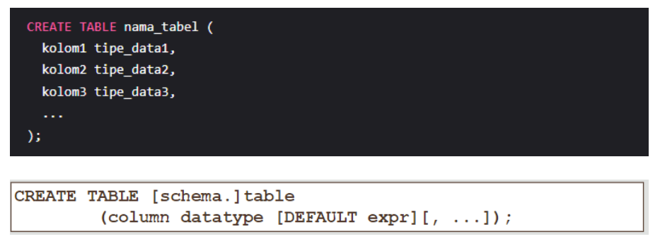

Bahasa Definisi Data (DDL) dalam sistem basis data adalah kumpulan perintah yang digunakan untuk mendefinisikan struktur basis data, termasuk membuat, mengubah, dan menghapus objek-objek basis data seperti tabel, indeks, dan skema. DDL mencakup perintah seperti CREATE, ALTER, dan DROP. DDL tidak berinteraksi langsung dengan data itu sendiri, tetapi mendefinisikan "wadah" tempat data disimpan.
Objektivitas dari Bahasa Definisi Data (DDL) terletak pada fungsinya untuk mendefinisikan struktur basis data secara eksplisit dan tidak ambigu. DDL menyediakan cara standar untuk mendefinisikan tabel, kolom, jenis data, dan objek basis data lainnya, memastikan bahwa struktur database dapat dipahami dan diinterpretasikan secara konsisten oleh sistem manajemen basis data (DBMS) dan pengguna. Objektivitas ini penting untuk integritas dan konsistensi data dalam sistem basis data.
Oracle adalah salah satu sistem manajemen basis data terkemuka di dunia, dan cara membuat tabel di Oracle merupakan salah satu langkah penting dalam proses pengelolaan data. Tabel adalah struktur dasar yang digunakan untuk menyimpan data dalam basis data Oracle. Setiap tabel terdiri dari kolom dan baris. Kolom mewakili atribut-atribut yang mendefinisikan data yang akan disimpan, sedangkan baris berisi data yang sebenarnya. Dengan membuat tabel, Anda dapat mengatur dan mengelola data dengan efisien. Langkah-langkah cara create tabel di oracle adalah sebagai berikut :
Perintah CREATE TABLE digunakan untuk membuat tabel di Oracle. Anda perlu menentukan nama tabel dan kolom-kolom yang akan ada dalam tabel tersebut. Berikut adalah contoh sintaks perintah CREATE TABLE:
Pastikan untuk mengganti nama_tabel, kolom1, kolom2, dan seterusnya dengan nama yang relevan untuk tabel dan kolom.
Kendala atau constraints digunakan untuk memberikan aturan tambahan terhadap data yang disimpan dalam tabel. Beberapa kendala umum yang dapat Anda terapkan adalah:
Setelah telah menyiapkan perintah CREATE TABLE dengan semua rincian yang diperlukan, Anda perlu menjalankan perintah tersebut di Oracle. Dapat menggunakan antarmuka pengguna grafis seperti Oracle SQL Developer atau menjalankan perintah SQL melalui lingkungan baris perintah seperti SQL*Plus.Pastikan memiliki hak akses yang diperlukan untuk membuat tabel di basis data yang sesuai sebelum menjalankan perintah.
Setelah perintah CREATE TABLE dijalankan, Anda dapat memverifikasi apakah tabel telah berhasil dibuat di Oracle. Anda dapat menggunakan perintah DESCRIBE atau SELECT untuk melihat struktur tabel dan memastikan kolom-kolom yang diinginkan telah dibuat dengan benar.